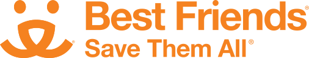

WOOF! Cardano Stake Pool
Ticker: WOOF
"A pool for pet lovers and meme coins!"
WOOF is a reliable and competitive Cardano staking pool designed to maximize rewards to our delegators.
The pool is owned & operated by an IT professional and Cardano Plutus Pioneer. A substantial pledge of 100 thousand ADA (₳) shows our commitment to running high-quality, secure operations. At the same time, fees are the lowest possible: 340 fixed fee and 0% margin fee.
WOOF is proud to support the well-being of abandoned and special-needs companion animals! 10% of pool rewards will be donated to the tremendous animal charities listed below.
Come join the WOOF pack. You will not only support the cause of animal well-being charities, but also the Cardano developer community!
How can I receive $Bison coin?
Stake any amount with WOOF pool and once your stake becomes
This Medium article from Bison team has all the details on the $Bison token distribution program
Medium article.
You can also join the $Bison discord by following this invite: Bison Discord invite.
In the discord, you can learn everything about the $Bison token!
On DripDropz, you can claim 1 million $Bison coins per active staked ADA in each epoch through epoch #320. The maximum earnings is 10 billion $Bison per epoch.
Example $Bison Claimed per Epoch
| Amount of ADA staked | Amount of $Bison you can claim | Comments |
|---|---|---|
| 50 | 50,000,000 | Minimum ADA staking |
| 1,000 | 1,000,000,000 | A tidy amount of 1 billion $Bison |
| 3,332 | 3,332,000,000 | Now we're talkin! |
| 10,000+ | 10,000,000,000 | You get the max $Bison earnings! |
* For your stake to become active, you need to maintain your delegation for 2 epochs once the current epoch ends. E.g., let's suppose you delegate some ADA to WOOF pool and it's one day before the current epoch ends. Then, your stake will be active in 11 days. The calculation is 1 day until current epoch ends plus 10 days (or 5 days/epoch * 2 epochs). Also note, if your ADA was staked with another pool previously and had become active, your ADA is still active with the other pool in the meantime.
What charities do you support?

Best Friends is a non-profit organization dedicated to a No-Kill mission. The history of the organization begins in Utah, where they operate the largest sanctuary for companion animals in the US. This is a place where homeless and special-needs animals can heal, be adopted, or receive lifelong care. You can read about the history of Best Friends here.
Best Friends has expanded to other US cities by partnering with city shelters and rescue groups to form hubs, run adoption centers, and provide essential services to animals.
Locations
Utah | New York | Los Angeles | Atlanta | Arkansas | Houston | Pennsylvania
Learn moreASPCA established the first animal humane society in North America. They have literally been saving animal lives since 1866! You can read about the history of ASPCA here.
They are a non-profit organization founded on the belief that animals are entitled to kind and respectful treatment at the hands of humans and must be protected under the law. They run adoption centers, fostering programs, spay/neuter programs, and veterinary student & volunteer programs.
Locations
New York City | Los Angeles | Miami, Florida | Asheville, North Carolina
Learn moreHow will pool donations work?
WOOF Pool will make donations on a monthly basis provided the pool produces blocks in the preceding 30 days, i.e. every six epochs. The charities will be be rotated after each 30 day period.
Proof of donations by the pool will be provided on this website.
As a long-term goal, WOOF pool will reach out to the organization to consider receiving ADA directly or by using a payment gateway like ADA Pay, so that it eliminates the need to convert donations into fiat money. This will help expand the Cardano ecosystem to more organizations and promote awareness.
Who is the pool operator?

I am Kurt, an IT professional with over twenty years of software development experience as a consultant based in the United States. I appreciate the impact of blockchain technologies and believe Cardano is poised to change the world for the better. I have been learning about digital currencies and blockchain projects since 2017.
In addition to running WOOF pool, I am working to build distributed applications (DApps) on Cardano. Over the last few months, I have been learning the Haskell programming language, which is the language used by Cardano for smart contract development. I aim to give back to the community by producing educational videos and documentation about the things I learn in the process.
My wife and I love animals, and we have two dogs named Zola and Tark. Our dogs bring so much joy to our lives. But, there are so many pets that are abandoned or have been mistreated and need care & shelter. This pool will provide important financial resources to the organizations that provide care to the animals in need. Once the pool starts making donations, I plan to add a blog to this website to provide updates on the charities.
If you have any questions or want to reach out, you can find me on twitter, email and telegram:
What does the pool run on?
The pool is run on three virtual private servers (VPS) including one block producer and two relays distributed across different data centers in Europe and the United States.
Each VPS is running Ubuntu 20.04 operating system with 8 CPU cores, 30 GB of RAM, and 800 gigabytes of SSD storage to accommodate growing network usage.
How will the pool be maintained?
This pool is monitored to ensure 24 x 7 access. The monitoring process collects statistics about the health of the operating system as well as the state of the Cardano block chain. If the state of the system shows any concerns such as the Cardano node not connecting to peers, notifications are sent to the operator to promptly fix the issue.
Your pool operator will maintain the appropriate Cardano node software at all times and follow best-practice security recommendations to ensure the pool maintains high availability.
Why Cardano?

One of the biggest differentiators of Cardano from other blockchains is their philosophy towards designing the protocols used by the network. Cardano relies on the standards of science. IOHK, the company which founded Cardano, recruits domain experts and professors from computer programming, network design, and cryptography to research problems and design solutions. Based on the research, they write academic papers and present them at computing conferences for peer review. This research and peer-review process leads to better design, and it also promotes shared understanding with the broader community in the cryptography/blockchain space. Because of this rigor, Cardano may be slower to market than other blockchain projects, but it also means that Cardano will deliver solutions that are more robust and with less unforeseen issues as compared to other projects. You can read about the research papers authored by Cardano project here.
The CEO of IOHK, Charles Hoskinson, is a great educator. You can learn about what makes Cardano a 3rd generation blockchain by watching his whiteboard talk on YouTube here.
Recently, Grayscale, a very prominent digital currency investment company produced a report titled "An Introduction to Cardano". This report provides a good background of the Cardano blockchain including its history and its ecosystem. You can view the report here.
Other resources to learn about Cardano:
- Cardano Documentation - Full technical documentation of the project
- Cardano Roadmap - Development path of the Cardano project
- Why Cardano - The philosophy behind the project
How do I stake my ADA?
Perhaps, you are new to Cardano or you just need some help learning how to stake your ADA. Fortunately, there are some nice YouTube Videos on this. Here is one to get you started, but it's easy to find great tutorials on this by searching in YouTube. It would be wonderful if you stake with WOOF Pool!